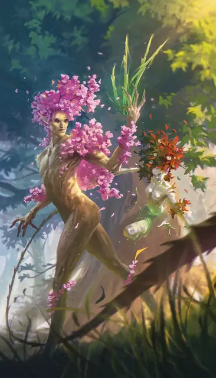

Дриада
Dryad
Средняя Фея, Нейтральная

Класс Защиты 16 Инициатива +1 (11)
Хиты 22 (5к8)
Скорость 30 футов
| мод | спас | ||
|---|---|---|---|
| СИЛ | 10 | +0 | +0 |
| ЛОВ | 12 | +1 | +1 |
| ТЕЛ | 11 | +0 | +0 |
| мод | спас | ||
|---|---|---|---|
| ИНТ | 14 | +2 | +2 |
| МДР | 15 | +2 | +2 |
| ХАР | 18 | +4 | +4 |
Чувства Тёмное зрение 60 футов, пассивное Восприятие 14
Языки Сильван, Эльфийский
Опасность 1 (200 опыта; БВ +2)
Особенности
Сопротивление магии. Дриада совершает с Преимуществом спасброски от заклинаний и прочих магических эффектов.
Разговор с животными и растениями. Дриада может общаться со Зверями и Растениями, как если бы у них был общий язык.
Действия
Мультиатака. Дриада совершает одну атаку Плетью из лозы или Градом колючек и может сотворить заклинание Очарование монстра.
Плеть из лозы. Бросок рукопашной атаки: +6, досягаемость 10 фт. Попадание: 8 (1к8 + 4) Рубящего урона.
Град колючек. Бросок дальнобойной атаки: +6, дистанция 60 фт. Попадание: 7 (1к6 + 4) Колющего урона.
Сотворение заклинаний. Дриада сотворяет одно из следующих заклинаний, не нуждаясь в Материальных компонентах (заклинательная характеристика — Харизма, Сл спасброска заклинаний 14):
Неограниченно: Дружба с животными, Искусство друидов, Очарование монстра
1/день каждое: Бесследное передвижение, Опутывание
Бонусные действия
Древесный путь. Если дриада находится в пределах 5 футов от дерева не меньше Большого размера, она телепортируется в незанятое пространство в пределах 5футов от второго дерева не меньше Большого размера, находящегося в пределах 60 футов от первого дерева.
Бонус мастерства +2
Среда обитания Леса
Сокровища Любые
Дриада
Связанный с деревом хранитель природы
Дриады — хранительницы лесов, которые магическим образом перемещаются от дерева к дереву, от корней к ветвям, чтобы изводить незваных гостей оплетающими лозами и шипами. Большинство из этих неуловимых существ создают особую связь с одним растением или природным убежищем и защищают их. Некоторые обладают чертами, которые делают их похожим на связанные с ними растения. Дриады могут заболеть и даже умереть, если их растение или убежище будет уничтожено. Спасти их может лишь исцеление или пересадка при помощи магии в другую обитель. Совершите бросок по таблице «Убежище дриады» для вдохновения или выберите сами связь дриады.
Убежище дриады
| 1к6 | Дриада обитает в... |
| 1 | Клоновой колонии в несколько акров — группе соединённых между собой деревьев одного вида. |
| 2 | Похожей на крепость дерево, такое как баобаб или секвойя. |
| 3 | Живом замке — растении, которое запечатывает зло под ним или закрывает вход в подземелье. |
| 4 | Одиноком дереве, стоящем на голой вершине или среди окаменевшего леса. |
| 5 | Растении с волшебными плодами или особенными семенами. |
| 6 | Ходячей куче или древне, с которым Фея создала симбиотическую связь. |